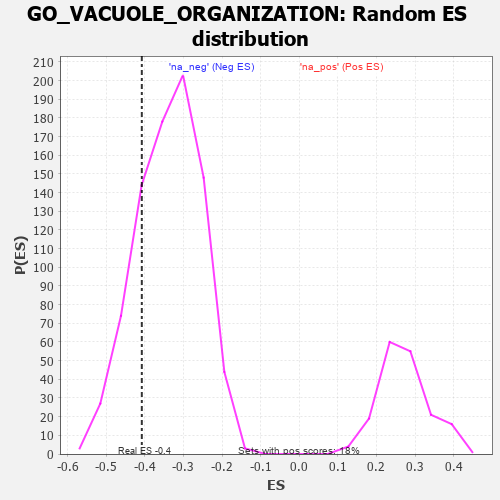

| | | Dataset | 7d |
| Phenotype | NoPhenotypeAvailable |
| Upregulated in class | na_neg |
| GeneSet | GO_VACUOLE_ORGANIZATION |
| Enrichment Score (ES) | -0.40786526 |
| Normalized Enrichment Score (NES) | -1.2055928 |
| Nominal p-value | 0.21480583 |
| FDR q-value | 0.6207819 |
| FWER p-Value | 1.0 |
Table: GSEA Results Summary
 Fig 1: Enrichment plot: GO_VACUOLE_ORGANIZATION
Fig 1: Enrichment plot: GO_VACUOLE_ORGANIZATION
Profile of the Running ES Score & Positions of GeneSet Members on the Rank Ordered List
| PROBE | GENE SYMBOL | GENE_TITLE | RANK IN GENE LIST | RANK METRIC SCORE | RUNNING ES | CORE ENRICHMENT | | 1 | ULK1 | | | 272 | 0.875 | 0.0041 | No |
| 2 | CLN5 | | | 346 | 0.751 | 0.0279 | No |
| 3 | TFEB | | | 839 | 0.522 | -0.0113 | No |
| 4 | STX17 | | | 940 | 0.497 | -0.0020 | No |
| 5 | EMC6 | | | 1183 | 0.449 | -0.0128 | No |
| 6 | ATG12 | | | 1310 | 0.427 | -0.0100 | No |
| 7 | NPRL3 | | | 1592 | 0.375 | -0.0290 | No |
| 8 | NPRL2 | | | 2184 | 0.278 | -0.0913 | No |
| 9 | WIPI2 | | | 2618 | 0.210 | -0.1368 | No |
| 10 | BAG3 | | | 2620 | 0.209 | -0.1277 | No |
| 11 | VPS4A | | | 2654 | 0.205 | -0.1229 | No |
| 12 | SCFD1 | | | 2783 | 0.185 | -0.1309 | No |
| 13 | BECN1 | | | 2828 | 0.179 | -0.1285 | No |
| 14 | CLN6 | | | 2847 | 0.177 | -0.1231 | No |
| 15 | MTM1 | | | 2893 | 0.168 | -0.1214 | No |
| 16 | FEZ1 | | | 3055 | 0.142 | -0.1354 | No |
| 17 | ATG9A | | | 3069 | 0.141 | -0.1309 | No |
| 18 | AKTIP | | | 3178 | 0.125 | -0.1390 | No |
| 19 | VPS16 | | | 3370 | 0.093 | -0.1590 | No |
| 20 | ATG3 | | | 3471 | 0.081 | -0.1681 | No |
| 21 | ATG2B | | | 3756 | 0.033 | -0.2025 | No |
| 22 | VMP1 | | | 3803 | 0.027 | -0.2071 | No |
| 23 | VPS35 | | | 3989 | -0.006 | -0.2302 | No |
| 24 | ATG5 | | | 4051 | -0.016 | -0.2372 | No |
| 25 | MTOR | | | 4114 | -0.025 | -0.2440 | No |
| 26 | VPS11 | | | 4202 | -0.041 | -0.2532 | No |
| 27 | FIG4 | | | 4348 | -0.068 | -0.2685 | No |
| 28 | LRRK2 | | | 4467 | -0.087 | -0.2795 | No |
| 29 | RAB14 | | | 4784 | -0.155 | -0.3126 | No |
| 30 | CHMP5 | | | 4952 | -0.188 | -0.3254 | No |
| 31 | RAB7A | | | 5302 | -0.271 | -0.3576 | No |
| 32 | LYST | | | 5448 | -0.307 | -0.3624 | No |
| 33 | MTMR3 | | | 5809 | -0.408 | -0.3899 | Yes |
| 34 | ATG7 | | | 5858 | -0.420 | -0.3775 | Yes |
| 35 | PPT1 | | | 6038 | -0.485 | -0.3788 | Yes |
| 36 | ATG13 | | | 6110 | -0.508 | -0.3654 | Yes |
| 37 | IFT88 | | | 6335 | -0.590 | -0.3677 | Yes |
| 38 | RALB | | | 6399 | -0.617 | -0.3485 | Yes |
| 39 | RAB43 | | | 6419 | -0.628 | -0.3233 | Yes |
| 40 | CLN3 | | | 6580 | -0.699 | -0.3128 | Yes |
| 41 | ARF1 | | | 6583 | -0.701 | -0.2822 | Yes |
| 42 | RAB5A | | | 6655 | -0.741 | -0.2586 | Yes |
| 43 | VPS18 | | | 6659 | -0.743 | -0.2263 | Yes |
| 44 | HEXB | | | 6894 | -0.864 | -0.2178 | Yes |
| 45 | MFSD8 | | | 7067 | -0.977 | -0.1966 | Yes |
| 46 | RAB1A | | | 7096 | -0.993 | -0.1565 | Yes |
| 47 | MFN2 | | | 7208 | -1.081 | -0.1230 | Yes |
| 48 | ABCA1 | | | 7243 | -1.113 | -0.0784 | Yes |
| 49 | MYO7A | | | 7302 | -1.175 | -0.0340 | Yes |
| 50 | GRN | | | 7319 | -1.194 | 0.0164 | Yes |
| 51 | ENO4 | | | 7564 | -1.495 | 0.0514 | Yes |
Table: GSEA details [plain text format]

Fig 2: GO_VACUOLE_ORGANIZATION: Random ES distribution
Gene set null distribution of ES for GO_VACUOLE_ORGANIZATION